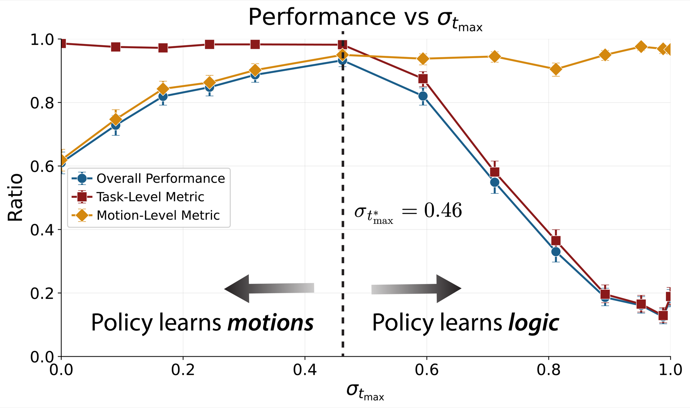

High noise: contraction
Use suboptimal data when noising makes it hard to distinguish from target data. This is where shared intent can help.
Imperfect robot data still carries signal. Ambient keeps that signal without learning the failures by asking when, during diffusion training, suboptimal data looks like the target data. Instead of asking which suboptimal data to keep, Ambient asks when each source should train the diffusion policy, expanding the set of usable robot data sources. The implementation is a tiny change to the dataloader: sample the diffusion noise level first, then choose only data sources that are valid at that noise level.
Imitation learning is easiest when you have expert demos from the exact robot, task, and environment you care about. But this type of data is often scarce. What is abundant is suboptimal data: non-expert teleoperation, failures, simulation, other tasks, other robots, and large mixed datasets such as Open X-Embodiment. Some of it is useful, some of it is wrong, and Ambient asks: at which diffusion noise levels does this suboptimal source match the target behavior?
Read the columns from right to left during denoising. High-noise denoisers recover coarse structure; low-noise denoisers refine local details.
Ambient uses this structure to keep the part of each suboptimal dataset that transfers and drop the part that does not.

Ambient leaves Diffusion Policy alone at test time. The change is in training: each denoiser sees only the data sources that make sense at its noise level.
At low noise, a denoiser can see the mistakes: jitter, bad contacts, poor control. At high noise, those details are washed out. If the remaining coarse plan matches the target task, the suboptimal data can train high-noise denoisers.
That is the high-noise case. The low-noise case is different: locality lets Ambient reuse short-range motion even when the overall task is different.
Target and suboptimal data are separated.
They overlap; the shared plan remains.
Use suboptimal data when noising makes it hard to distinguish from target data. This is where shared intent can help.
Use suboptimal data when the local motion transfers. A grasp can still be useful even if the demonstration sorted to the wrong bin.
If wrong dynamics, wrong task logic, or poor control is still visible, train from target data only.

Ambient changes which data source is used for each training batch. After sampling the diffusion noise level, the data loader draws target data or a suboptimal source that is valid at that noise level. The policy architecture and inference stay standard.
Split demonstrations into target data Dp and suboptimal data Dq. A sweep is often enough. The paper also gives a classifier option: train cφ(At, t) to tell whether a noisy action came from Dp or Dq.
tmin is where noisy Dq actions start looking like noisy target actions. In practice, it is where the classifier can no longer separate them.
tmax marks low-noise timesteps where local skills transfer. It can be estimated with a similar classifier or chosen with a task-specific sweep.
Ambient beats filtering and plain co-training across controlled shifts and real Kuka tasks, including up to 15% higher table-cleaning success and 33% taller towers when scaled with Open X-Embodiment data.

Each task makes the useful part of the suboptimal data visible.
Noisy trajectories
The target set is 50 smooth trajectory-optimization paths. The suboptimal set is 5,000 RRT paths: much broader coverage, but jagged motion. Ambient keeps the coverage and drops the jitter: 99.5% success with smoothness 31.0 vs 62.2 for co-training.

Sim-to-real proxy
The target set is 50 teleoperated pushes in the target environment. The suboptimal set is 2,000 planner trajectories from a source simulation. The strategy transfers; the contact details do not. Per-datapoint tmin reaches 93.5% success vs 84.5% for co-training.

Task mismatch
The target demos sort each colored block into the correct bin. The suboptimal demos use the same pick-and-place motions, but send colors to the opposite bins. Ambient borrows the grasping and placing motion without learning the wrong sorting rule: 93.3% success vs 22.7% for co-training.

Can Ambient use a broader OXE mixture instead of filtering back to the curated one?
Open X-Embodiment scaling
Magic Soup++ is the curated 27-dataset OXE mix used by OpenVLA. Our Custom OXE keeps that mix and adds 21 compatible datasets; it is broader, not more filtered. We leave out datasets that were unavailable, bimanual, missing frequency labels, or blocked by loader issues.
Co-training plateaus as more OXE data is added. Ambient improves because suboptimal datasets train only the timesteps where they match the target task. On Kuka hardware, it improves table cleaning by up to 15% and builds towers up to 33% taller than co-training.

Filtering throws away useful signal. Plain co-training copies too much. Ambient is the middle option: keep the suboptimal robot data, but train from it only where the diffusion noise makes it compatible with the target. In these experiments, that sampler change beats both baselines.
Example real-world rollouts from the hardware experiments.
Common questions
No. In planar pushing, performance was not very sensitive to the classifier checkpoint or threshold. It only needs to find where suboptimal data starts to look like target data.
When the local primitive transfers. It clearly helps in block sorting, where pick-and-place motion transfers but task logic does not. It also appears useful in tower building. It did not help in sim-to-real pushing, where contact dynamics changed.
Less than with co-training. In OXE, removing re-weighting made Ambient at most 9% worse. Unweighted co-trained policies were too unsafe to run on hardware.
Fine-tuning helps, but it did not replace Ambient. Fine-tuning an Ambient base policy beat fine-tuning a co-trained base policy, and with scarce target data, the Ambient base could already beat the fine-tuned co-trained one. On OXE table cleaning, fine-tuning did not give a statistically significant gain.
Not directly. Ambient targets action-space shift. The paper also tried noising observations and classifier-free guidance on table cleaning; neither improved the policy in that setting.
Compute. Ambient trains on suboptimal data, so it costs about the same as co-training and more than filtering. In our experiments, the added cost was usually worth it.
We propose Ambient Diffusion Policy, a simple and principled method for imitation learning from suboptimal data in robotics. High-quality, task-specific robot data is expensive and time-consuming to collect, while suboptimal datasets with lower-quality or out-of-distribution demonstrations are abundant. Existing methods that co-train on both data sources in robotics often fail to separate the meaningful and the harmful features in suboptimal samples. In contrast, our method attempts to extract only the useful learning signal by introducing a new axis to co-training in robotics: noise-dependent data usage.
Ambient Diffusion Policy restricts the contribution of suboptimal data during training to only the high and low diffusion times. We observe that robot action data exhibits a spectral power law, which induces two important properties on the optimal Diffusion Policy: locality and a global-to-local hierarchy. These properties rigorously justify our algorithm.
Our experiments validate Ambient Diffusion Policy on four types of suboptimal action data (noisy trajectories, sim-to-real gap, task mismatch, and large-scale data mixtures) and six tasks. The results show that it effectively learns from arbitrary sources of suboptimal data. Notably, it outperforms existing baselines by up to 33% when scaled to Open X-Embodiment—a large real-world dataset with unstructured and heterogeneous distribution shifts. Overall, Ambient Diffusion Policy increases the utility of suboptimal demonstrations and expands the set of usable data sources in robotics.
@misc{wei2026ambientdiffusionpolicy,
title = {Ambient Diffusion Policy: Imitation Learning from Suboptimal Data in Robotics},
author = {Adam Wei and Nicholas Pfaff and Thomas Cohn and Arif Kerem Dayi and Constantinos Daskalakis and Giannis Daras and Russ Tedrake},
year = {2026},
note = {arXiv preprint}
}